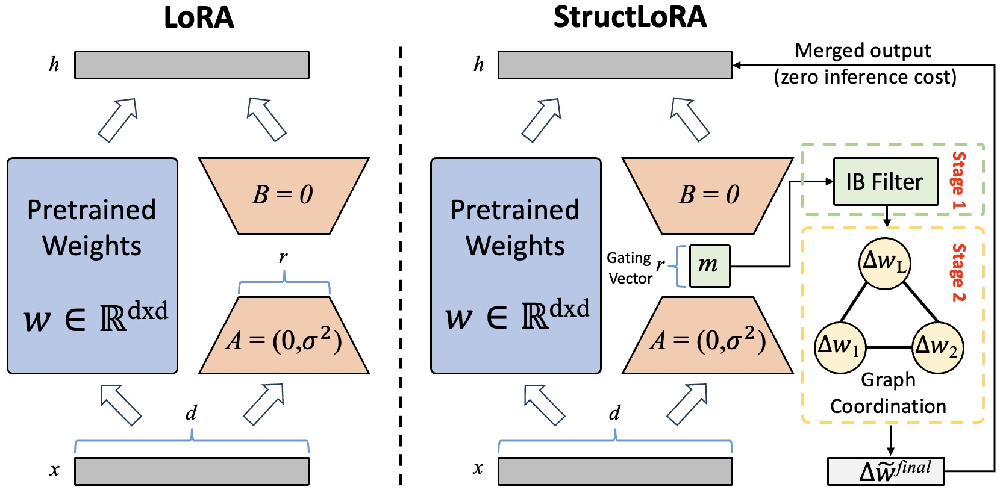
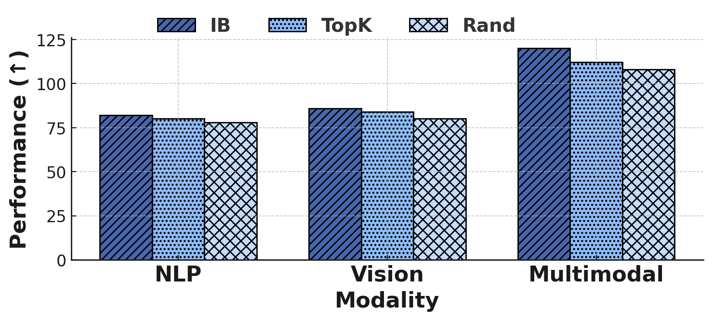
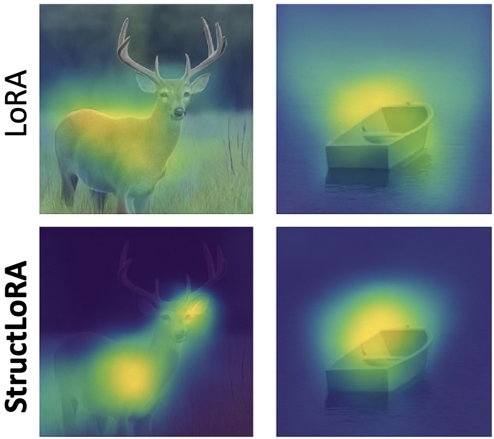
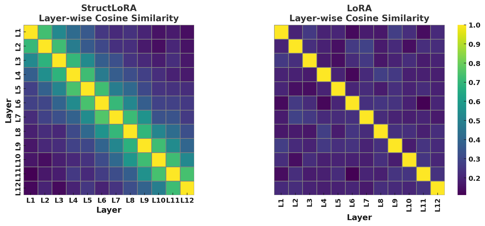
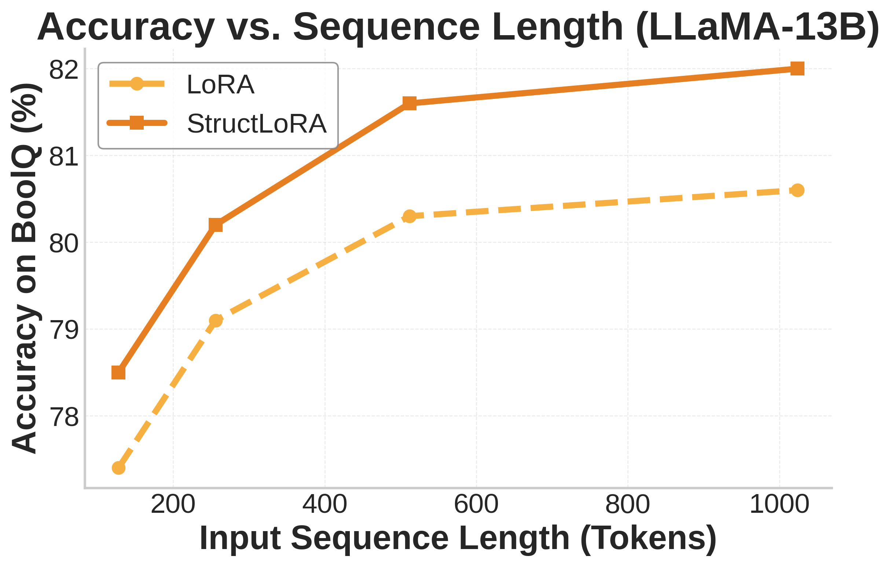
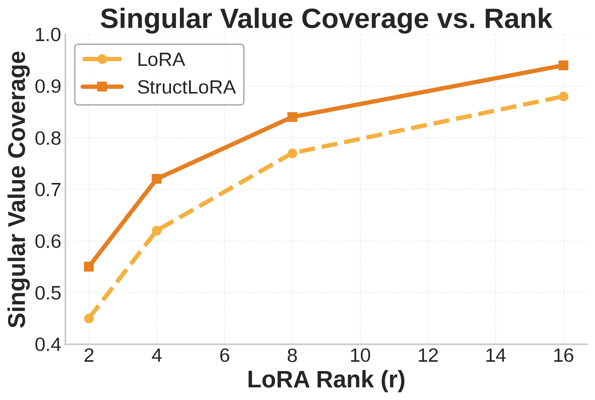

Abstract
Key Results at a Glance
(LLaMA-7B)
(LLaVA-1.5-7B)
(RoBERTa-base)
(training-only modules)
Method Overview
We identify two fundamental, unaddressed shortcomings in the LoRA paradigm. Semantic drift stems from allocating a limited parameter budget uniformly across all low-rank update directions, assuming each direction is equally important. Structural incoherence arises from adapting each layer independently, disregarding the compositional structure of deep Transformers.

Stage 1: Information Bottleneck-Guided Directional Filtering
LoRA spreads a small budget over $r$ directions and treats them the same. In practice, only a few directions help predict the label; others carry nuisance variation. We gate the $r$ rank-one directions with a learnable mask $\mathbf{m} \in [0,1]^r$ and form the filtered update:
$\Delta \tilde{W} = A\,\text{diag}(\mathbf{m})\,B$
We learn $\mathbf{m}$ by an Information Bottleneck objective that rewards dependence on labels while penalizing spurious dependence on inputs, effectively raising the signal-to-noise ratio of the update.
Stage 2: Graph-Based Layer Coordination
We view the network as a graph $\mathcal{G}=(\mathcal{V},\mathcal{E})$ with one node per layer, where the node feature is the flattened filtered update. We connect adjacent layers and add semantic edges between layers with highly aligned gradients. A shallow GNN with residual connections propagates and refines the filtered updates, encouraging smoother adaptation trajectories across the model's depth. This can be formalized as Laplacian smoothing that provably reduces inter-layer drift energy.
Crucially, both the IB filter and the GNN coordinator are training-only — they are discarded at inference, so latency stays identical to vanilla LoRA.
Main Results
Table 1. Main comparison across language, vision, and multimodal benchmarks (~0.5–1% trainable parameters).
| Method | Type | BoolQ | PIQA | CIFAR-100 | ImageNet-1k | COCO Cap. | VQAv2 |
|---|---|---|---|---|---|---|---|
| Full Fine-tuning | — | 82.6 | 85.3 | 85.9 | 78.8 | 123.5 | 76.2 |
| LoRA | Reparam. | 79.1 | 82.4 | 81.5 | 76.2 | 116.2 | 73.5 |
| QLoRA | Reparam. | 80.0 | 83.1 | 82.7 | 76.9 | 119.1 | 74.2 |
| DoRA | Reparam. | 80.6 | 83.7 | 83.2 | 77.3 | 120.3 | 75.0 |
| Sensitivity-LoRA | Dynamic Rank | 80.9 | 84.0 | 83.5 | 77.5 | 120.8 | 75.2 |
| LoRA-Dropout | Sparsity | 80.2 | 83.3 | 82.5 | 76.8 | 118.8 | 74.5 |
| StructLoRA (Ours) | Filter + Coord. | 82.1 | 84.9 | 85.1 | 78.6 | 122.9 | 75.9 |
Table 2. Head-to-head comparison on the GLUE benchmark (RoBERTa-base).
| Method | MNLI | SST-2 | MRPC | CoLA | QNLI | QQP | RTE | STS-B | Avg. |
|---|---|---|---|---|---|---|---|---|---|
| LoRA | 87.3 | 93.5 | 87.1 | 58.8 | 93.0 | 90.5 | 79.4 | 91.0 | 85.1 |
| AdaLoRA | 87.3 | 93.6 | 87.3 | 59.0 | 93.1 | 90.6 | 79.6 | 91.2 | 85.2 |
| Sensitivity-LoRA | 87.6 | 94.6 | 87.7 | 60.2 | 93.6 | 90.7 | 81.8 | 91.3 | 86.0 |
| StructLoRA (Ours) | 88.1 | 95.0 | 88.5 | 61.5 | 94.1 | 91.0 | 82.3 | 91.5 | 86.5 |
Performance in Challenging Regimes
StructLoRA shines brightest where it matters most — under low-rank and low-data conditions.
Table 3. Performance under varying rank budgets.
| Rank ($r$) | Params (%) | BoolQ (LLaMA-7B) | CIFAR-100 (ViT-B/16) | COCO Caption (LLaVA) | |||
|---|---|---|---|---|---|---|---|
| LoRA | StructLoRA | LoRA | StructLoRA | LoRA | StructLoRA | ||
| 2 | 0.12 | 75.1 | 77.4 (+2.3) | 78.3 | 80.1 (+1.8) | 111.2 | 114.3 (+3.1) |
| 4 | 0.24 | 77.6 | 79.9 (+2.3) | 79.7 | 82.2 (+2.5) | 113.8 | 117.0 (+3.2) |
| 8 | 0.48 | 79.1 | 81.3 (+2.2) | 81.5 | 84.1 (+2.6) | 116.2 | 122.4 (+6.2) |
| 16 | 0.95 | 80.3 | 81.7 (+1.4) | 82.8 | 84.3 (+1.5) | 118.1 | 123.6 (+5.5) |
| 32 | 1.90 | 81.0 | 81.9 (+0.9) | 83.4 | 84.5 (+1.1) | 119.0 | 123.9 (+4.9) |
Table 4. Performance under limited supervision (few-shot learning), rank $r=8$.
| Dataset | Method | 10% | 25% | 50% | 100% |
|---|---|---|---|---|---|
| BoolQ (LLaMA-7B) | LoRA | 68.5 | 73.2 | 76.4 | 79.1 |
| StructLoRA | 71.2 (+2.7) | 76.3 (+3.1) | 78.9 (+2.5) | 81.3 (+2.2) | |
| CIFAR-100 (ViT-B/16) | LoRA | 73.6 | 78.0 | 80.5 | 81.5 |
| StructLoRA | 76.3 (+2.7) | 80.5 (+2.5) | 82.4 (+1.9) | 84.1 (+2.6) | |
| COCO Caption (LLaVA) | LoRA | 100.2 | 108.3 | 114.0 | 116.2 |
| StructLoRA | 103.7 (+3.5) | 112.4 (+4.1) | 117.9 (+3.9) | 122.4 (+6.2) |
Ablation Studies
Both the IB filter and the GNN coordinator are essential. Removing either degrades performance, and removing both collapses StructLoRA back to standard LoRA.
Table 5. Module-wise ablation of StructLoRA.
| Setting | BoolQ | $\Delta$ | CIFAR-100 | $\Delta$ | COCO Cap. | $\Delta$ |
|---|---|---|---|---|---|---|
| StructLoRA (Full) | 81.3 | — | 84.1 | — | 122.4 | — |
| w/o IB Filter | 79.4 | -1.9 | 81.9 | -2.2 | 117.8 | -4.6 |
| w/o GNN Coordination | 80.1 | -1.2 | 82.6 | -1.5 | 119.4 | -3.0 |
| w/o Both (= LoRA) | 79.1 | -2.2 | 81.5 | -2.6 | 116.2 | -6.2 |

Visualizing Structural Coherence




BibTeX
If you find our work useful, please consider citing: